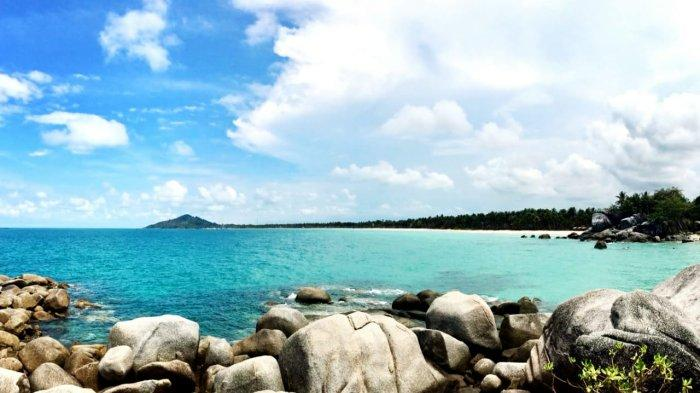

Pesisir Siangau
Hamparan pasir dan air laut yang tenang cocok untuk bersantai.

Menikmati pesisir Bangka dengan tenang
Hamparan pasir dan air laut yang tenang cocok untuk bersantai.
Bebatuan di tepi pantai menjadi latar foto yang menarik.
Sore hari adalah waktu terbaik untuk menikmati langit.
Pepohonan pantai memberi suasana teduh dan alami.
Beristirahat dan nikmati hidangan lokal sambil memandang laut.
Suara ombak membuat suasana pantai terasa damai.